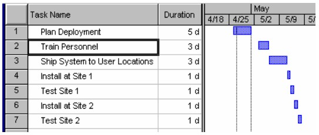

1.0 Overview/General
1.1 Deployment Objectives
1.2 Target Dates – Timing for start and stop activities, include those dates when it would be difficult or
improper to proceed with deployment activities and include any suggestions for an implied sequence of activities
(especially if multiple releases or application sets are involved).
1.3 Deployment Team Organization –Identify new roles and responsibilities, identify any new skills that will be
needed, identify necessary acquisition plans.
1.4 Contractual Obligations – Include those of IBM, the Client, Vendors and their relationships.
1.5 Issues – Describe open or anticipated issues with transportation, suppliers, or applications that have not
been resolved.
1.6 Critical Success Factors.
2.0 Deployment Preparation
2.1 Hardware/Software/Resource Requirements – definition of required workstations and printers, network
communications requirements, site survey requirements, coordination with the Testing Plans to make sure user’s have
signed off on the final system.
2.2 Training Plan – coordination of the deployment Plan with the Training and Education Plan. This information
should be written from the user’s point of view. This plan needs to include the training required for the
deployment and support teams as well as the user population.
2.3 Site Preparation – Checklists to insure that sites are prepared when necessary. Make sure that this
information is moved into the Deployment Gantt chart. Include site alteration recommendations.
2.4 Archived Data – Describe the plans that will be made to access any data that is archived from the systems to
be replaced.
2.5 Support – Sections to include the support that will be given for the new system in terms of Client or IBM
provided resource and required support from suppliers that are involved in the project.
2.6 Conversion Preparation – Link to the Conversion Plans to identify conversion criteria and timing. Create
measurements to define deployment success.
3.0 Deployment Execution – These activities must be coordinated with and incorporated into the
project’s overall Gantt chart.
3.1 Deployment Milestones.
3.2 Deployment Schedules – Link the Deployment Plan to the project’s Gantt chart to include release activities,
training activities, site construction schedules, and conversion activities.
3.3 Plan Communications – Make sure that the Client’s users insure they know how the conversion is relevant to
them. Describe the plan for notifying vendors of proposed activities. Describe the plan for notifying customers of
proposed activities.
3.4 Constraints – Describe any limiting items that will inhibit the execution of the Deployment Plan. These could
be hardware, timing, or resource items.
3.5 Legacy System Disposition – Describe how the legacy system will be taken down and removed from the production
environment. Describe the disposition of the old hardware and software.
4.0 Contingencies
The following graphic is an example of a Deployment Plan in Microsoft Project format:

|